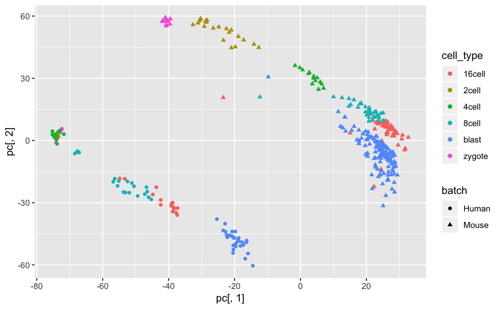

corgi.Rmdlibrary(corgi)yan <- readRDS(url("https://scrnaseq-public-datasets.s3.amazonaws.com/scater-objects/yan.rds"))
deng <- readRDS(url("https://scrnaseq-public-datasets.s3.amazonaws.com/scater-objects/deng-reads.rds"))
cell_type <- forcats::fct_c(as.factor(yan$cell_type1),as.factor(deng$cell_type1))
batch <- c(rep("Human",ncol(yan)),rep("Mouse",ncol(deng)))rownames(yan) <- toupper(rownames(yan))
rownames(deng) <- toupper(rownames(deng))
shared_genes <- intersect(rownames(yan),rownames(deng))Get rid of the spike-in genes
shared_genes <- shared_genes[-grep("ERCC",shared_genes)]yan <- yan[shared_genes,]
deng <- deng[shared_genes,]library(scran)
out <- scran::multiBatchNorm(yan,deng,assay.type = "logcounts")
yan <- out[[1]]
deng <- out[[2]]
X <- logcounts(yan)
Y <- logcounts(deng)
Z <- cbind(X,Y)
pc <- prcomp(t(Z),rank. = 2)$x